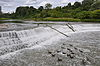

weir

Definition: A weir or low head dam is a barrier across the width of a river that alters the flow characteristics of water and usually results in a change in the height of the river level. Weirs are also used to control the flow of water for outlets of lakes, ponds, and reservoirs. There are many weir designs, but commonly water flows freely over the top of the weir crest before cascading down to a lower level.
Source: Wikipedia
Wikipedia Page
Wikidata Page
Occurs in: